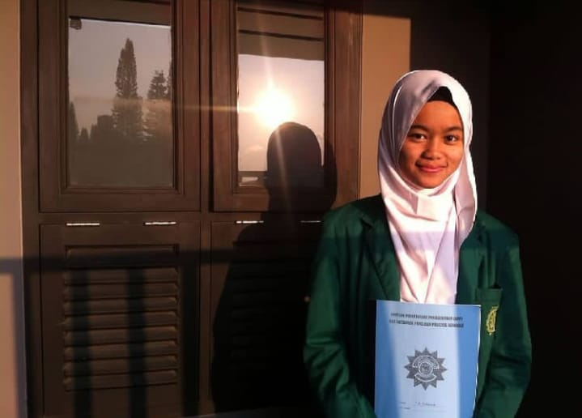
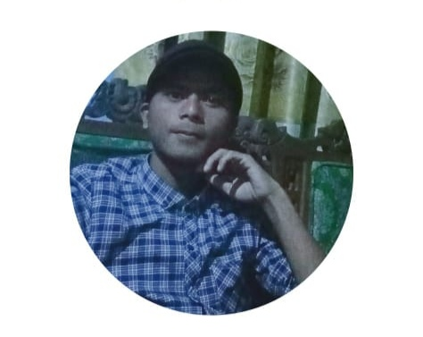

nama lengkap : seli nurhasanah
nama panggilan : seli
lahir tanggal : 21 agustus 2000
agama : islam
pendidikan terakhir: MA (madrasah liyah/mu'alimin
cempakawarna)
tempat lahir :kp.babakan jawa rt/rw 02/04
desa sukaraharja,
kec.cisayong kabupaten tasikmalaya
"Qodarullah di pertemukan dengan"

nama lengkap : abdul azis aripin
nama panggilan : azis
lahir tanggal : 3 september 1995
agama : islam
pendidikan terakhir: MA (madrasah aliyah/mu'alimin
bantar gedang)
tempat lahir : padamulya